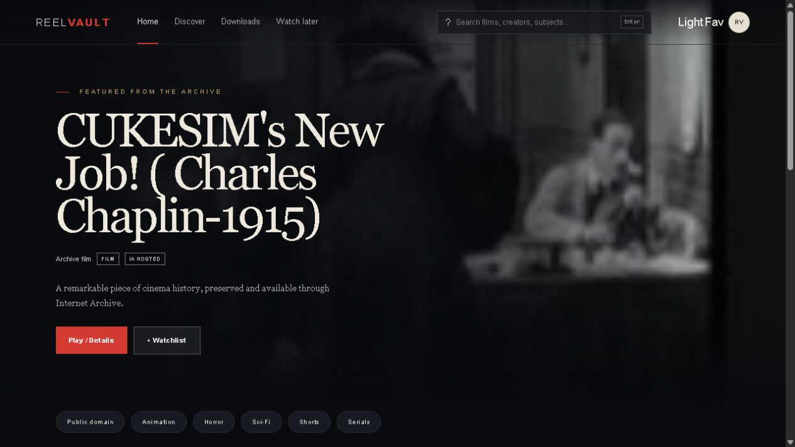

MoiréField
01
Optical interference drawing instrument
STUDIO INSTRUMENT / Windows + WebLayer lines, grids, rings and waves, then change their spacing and rotation to draw optical interference art.
Explore machine ⟶
Audio & visual instruments.
Sound, perception, and motion.
The collection / Original instruments
Playable systems for sound, motion, and strange interaction.
Optical interference drawing instrument
STUDIO INSTRUMENT / Windows + WebLayer lines, grids, rings and waves, then change their spacing and rotation to draw optical interference art.
Explore machine ⟶
Generative visual instrument
STUDIO INSTRUMENT / Windows + WebRepeat geometric cross-sections through depth, then shape the path, distortion and palette to create tunnel animation and still artwork.
Explore machine ⟶

Audio / video mosh instrument
1.0 · WEB LIVE / Web + WindowsCombine video sources, transfer motion and shape audio corruption to create experimental glitch videos.
Explore machine ⟶
Sample Based Drum Machine
ACTIVE / WindowsA compact six-voice sample based drum machine.
Explore machine ⟶



Kaleidoscope image and video maker
BROWSER PREVIEW / Windows + WebReflect an image, video or generated light field through adjustable mirrors to create moving symmetry.
Explore machine ⟶
Geometric engraving instrument
BROWSER PREVIEW / Windows + WebCombine rotating geometry and oscillators to draw intricate engraving patterns, then export PNG or SVG artwork.
Explore machine ⟶
Digital harmonograph
BROWSER PREVIEW / Windows + WebTune damped oscillators to trace flowing curves, combine drawings in layers and export vector or raster artwork.
Explore machine ⟶
Rotational interference instrument
BROWSER PREVIEW / Windows + WebChange overlapping geometry and rotation to explore beating patterns, accumulated trails and moving line art.
Explore machine ⟶
Glitch painting instrument
ALPHA · WINDOWS / WindowsPaint with image and video pigment, distort strokes and build artwork with living video regions.
Explore machine ⟶